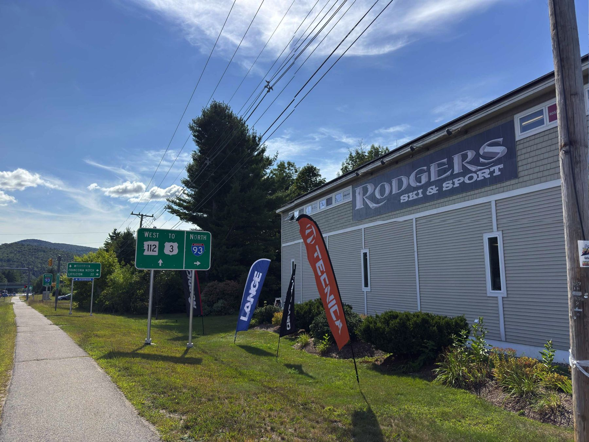
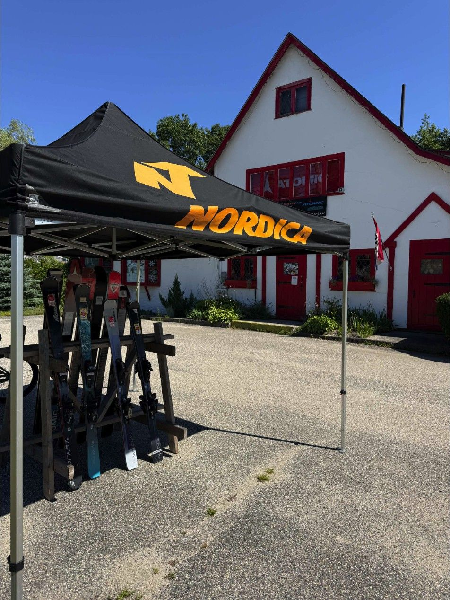
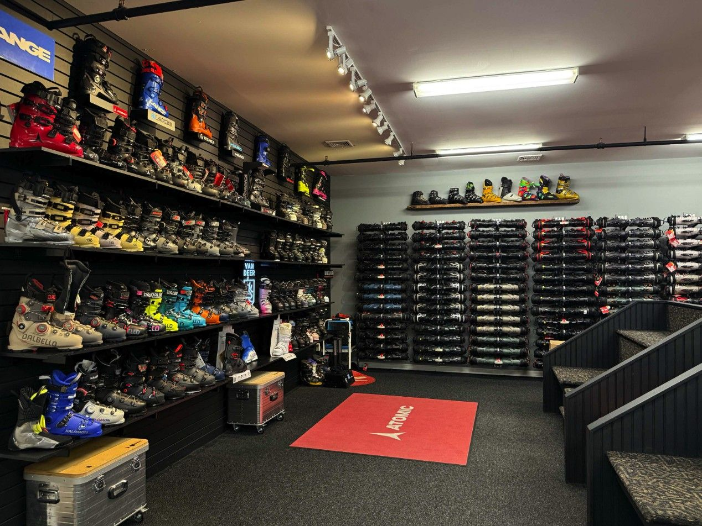
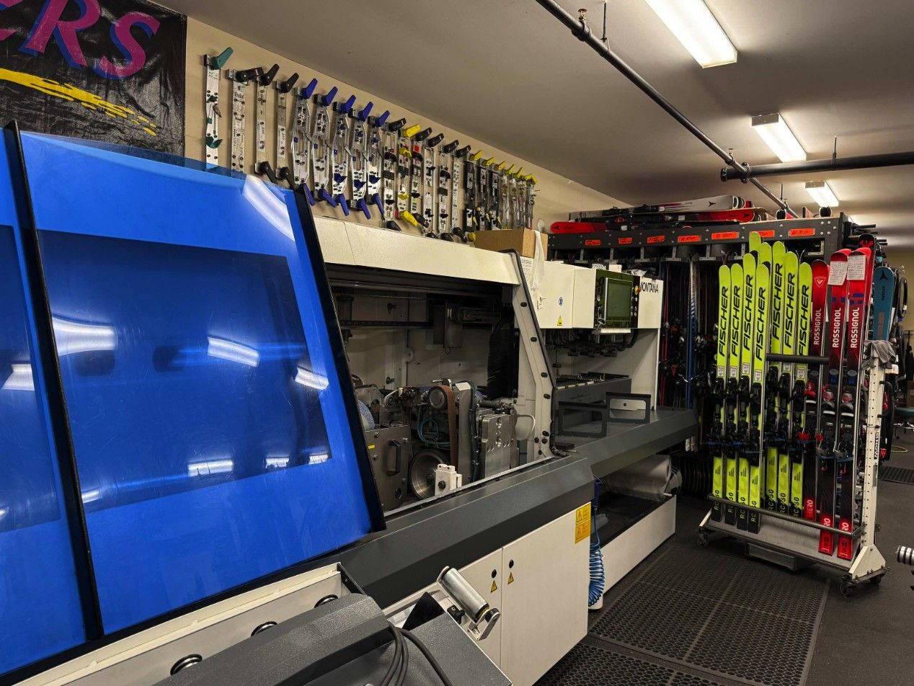
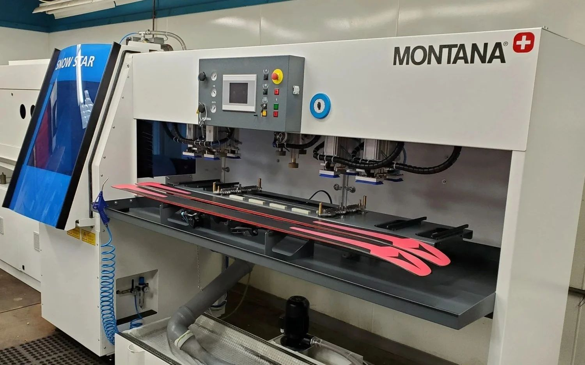
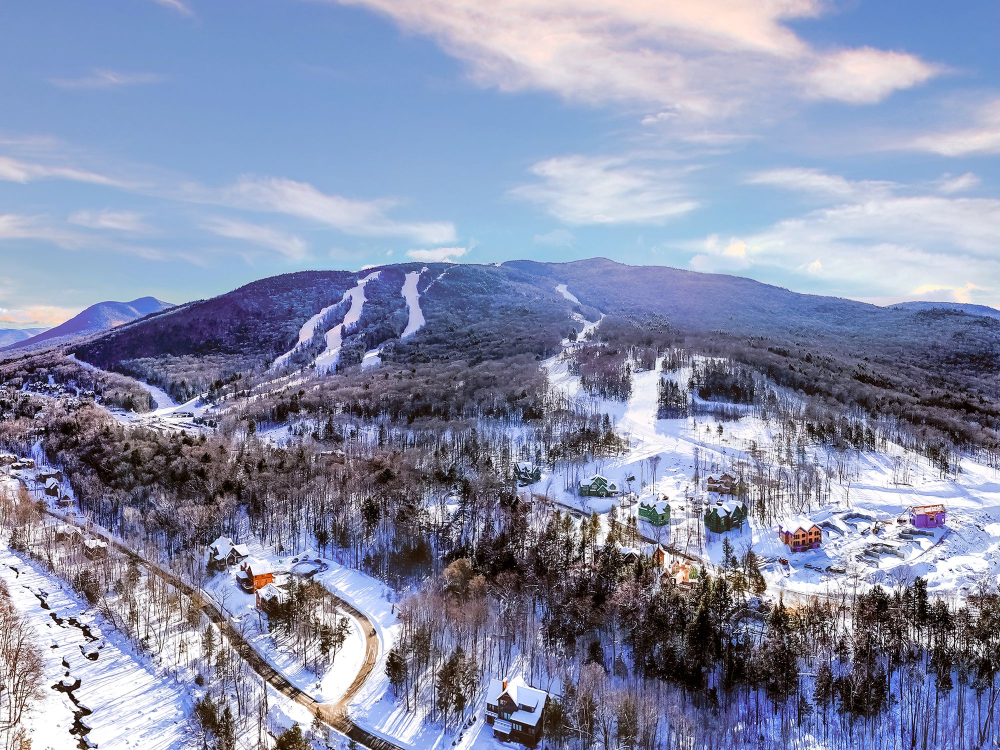

Two family-run ski and bike shops: Lincoln, New Hampshire, first exit off I-93 before Loon, and Scarborough, Maine, off I-95 on Route 1. Gear, fitting and tuning from people who use what they sell.

The Fall Tent Sale is on: September 18 to October 12 in Lincoln
Our biggest deals of the year are back under the tent on Railroad Street: skis, snowboards, boots, apparel, helmets and everything in between. Staff picks and deal reveals all sale long.
5 Railroad St, Lincoln, NH · open every day 8:30–5. Scarborough shoppers: the sale is at the Lincoln store this fall.
Two stores. One standard.
Each store has its own departments and its own programs. Pick yours; hours and phone numbers stay at the top of every page.

Lincoln, NHLincoln, New Hampshire
First shop off I-93, minutes from Loon. Skis, snowboards (the Mothership), bikes, rentals, the Boot Lab and the tune room. Open every day 8:30–5 · (603) 745-8347
Visit the Lincoln store Scarborough, ME
Scarborough, MEScarborough, Maine
Southern Maine’s ski and bike shop since 1986, off I-95 on Route 1. Skis, boots, bikes, tuning, boot work and the Junior Seasonal Lease. No rentals or snowboards at this store. Mon–Tue and Thu–Fri 10–6, Sat 10–5, Sun 11–5, closed Wednesday · (207) 883-3669
Visit the Scarborough store
Fall Tent Sale
Skis, snowboards, boots, apparel and helmets under the tent in Lincoln, September 18 to October 12.
Sale details →
Boot fitting
Book a fitting before the first cold weekend: shell fit, footbeds, punches and grinds at both stores.
The Boot Lab →
Pre-season tune
Bring last winter’s skis and boards in now and skip the December line.
Tuning menu →
Junior Seasonal Lease
Skis, bindings and boots for the season at the Scarborough store; pick-ups start October 1.
Lease details →
Lincoln tune roomWatch a fresh edge come to life
Our techs hand-tune every pair on a Montana stone grinder, with race-room standards and every service itemized and priced. Boot fitting runs the same way: certified fitters, custom insoles, punches, grinds, stance and alignment, and full FIS and USSA race prep in Lincoln.
From the journal
News, promotions, new brands, racing and what the local mountains are up to.
All posts →
Loon’s Black Ridge: 272 acres of tree skiing, and what to bring
Loon announced the biggest terrain expansion in its history: expert-only glades east of North Peak, no lifts, no snowmaking, opening winter 2027-28. Here is what the announcement says and the gear that makes sense for it.

The 2027 Smith goggles just landed at Rodgers Lincoln
ChromaPop clarity, dialed-in fit, colorways for days. Come see the wall for yourself.

Inside binding mounting and testing at the Scarborough shop
Mounted, adjusted, tested. Every pair is checked before it leaves our hands. Get your setup ready for the season.
@rodgersski
Follow along on Instagram: staff picks, deal reveals, new gear, and race days at Loon.
Instagram →